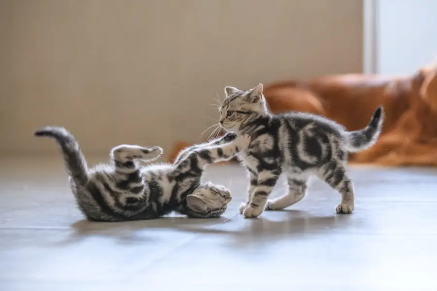
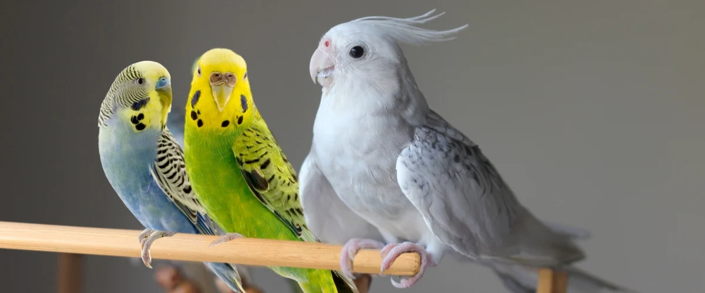

Perros
Protegemos la salud de tu mascota desde la prevención y la desparasitación, cuidando su pelaje con productos hipoalergénicos y asegurando su vitalidad con nutrición de nivel superior en cada etapa.
Servicios CaninosCentro Veterinario Colegiado & Farmacia
Atención médica integral, medicina preventiva, especialistas en aves exóticas y la mejor tienda de alimentos y salud para tus consentidos.
Dra. Sarah Jenkins
Hoy libre3 turnos disponibles
Atención Inmediata
Triaje médico directo por WhatsAppAtencion por especie
Protegemos la salud de tu mascota desde la prevención y la desparasitación, cuidando su pelaje con productos hipoalergénicos y asegurando su vitalidad con nutrición de nivel superior en cada etapa.
Servicios Caninos
Espacios clínicos especialmente diseñados para gatos, libres de olores caninos y ruidos que puedan generar estrés, además de servicios especializados en nutrición renal y urinaria y vacunación triple felina certificada.
Servicios Felinos
Profesionales especializados en la atención de psitácidos, canarios y aves paseriformes, ofreciendo servicios de cuidado y mantenimiento de pico y plumaje, detección de parásitos y orientación para mejorar su entorno mediante estrategias de enriquecimiento ambiental.
Servicio para AvesAlgunos de nuestros Servicios Clinicos
Precios claros y accesibles, atención brindada por profesionales especializados y procedimientos clínicos
Evaluación completa de la mascota: revisión física y dental, control de peso, auscultación y plan nutricional personalizado.
Tarifa desde
00$
Agendar por WhatsAppAtención especializada para aves: evaluación de plumaje, cuidado del pico y recomendaciones para un hábitat adecuado.
Tarifa desde
00$
Agendar por WhatsAppCartilla sanitaria oficial, vacunas contra la rabia, pentavalente canina y triple felina.
Tarifa desde
00$
Agendar por WhatsAppQuirófanos modernos, anestesia inhalatoria, ecografía Doppler y análisis de sangre con resultados rápidos.
Atencion Indmediata
Urgencias
Pedir Urgencia por WhatsApp